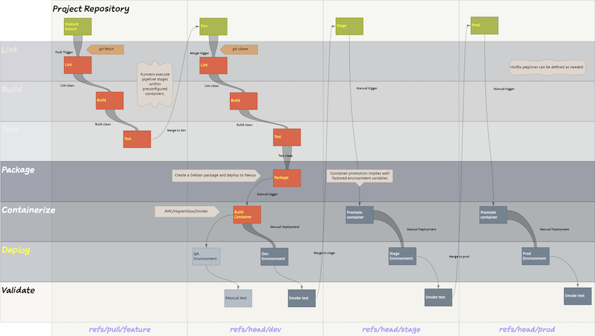
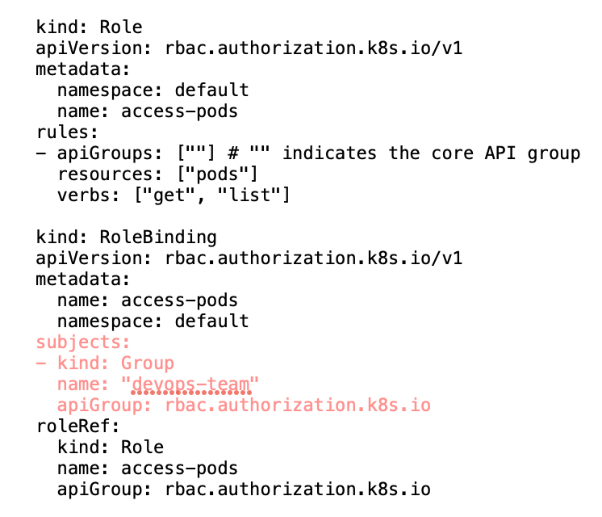
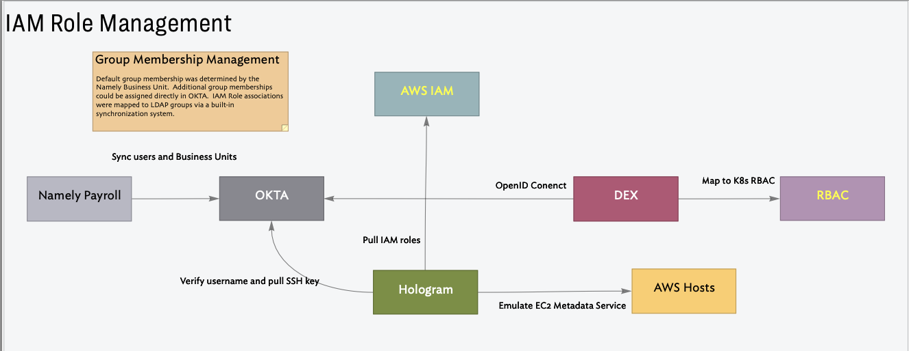

| Dates: | Apr 2017 - Aug 2022 |
| Role: | Lead, Principal Engineer |
| Technologies: | aws, docker, freeipa, hologram, okta, packer, prometheus, sourcegraph, vagrant, virtualbox |
| Programming Languages: | bash, python |
| DSLs: | ansible, make, terraform |
Review and select a version control system to replace GitHub. The solution should allow for self-hosting company repositories; It should also provide support for version controlled pipelines. Migrate the company repositories from GitHub to the new system. Upgrade all builds to use the new build sub-system.
I was responsible for reviewing and selecting a version control system to self-host the company’s repositories and provide a common build system. I was responsible for migrating all source control from GitHub to GitLab and for ensuring that all builds were standardized to use the Gitlab CI DSL.
Mirror all buckets in us-west-2 to us-east-1. This was to meet an early failover scheme.
All buckets were migrated across.
Migrate corporate repositories hosted on GItHub to an internal managed cloud-based GitLab infrastructure to satisfy regulatory requirements from Bank clients. Several repositories on GitHub were public to support open source initiatives. Github would continue to be used for these.
I was solely responsible for migrating 310 repositories from GitHub to GitLab.
The entire GitHub repository needed to by copied over to the Gitlab infrastructure. The new system needed to run as a slave instance to Github. Errors in migration and replication needed to be investigated and addressed.
Github repositories were mirrored into Gitlab, these instances were read-only. For select users in each engineering group git configurations were adjusted to read from the mirror and push to the active Github repositories. This allowed teams to verify the integrity of the mirrors and identify problems with data integrity and completeness.
During the cutover I worked with one team at a time to:
After months long testing and verification the entire company was cut over a couple of hours on Friday afternoon. There was never any need to revert to the original system.
Github was decommissioned, after about 6 months the original repositories were dropped.
Unify build and deploy for all internal and customer facing systems.
I was responsible deploying and maintaining a gitlab runner architecture. I was tasked with unifying all builds and deployments with versioned build/deploy pipelines. I migrated engineering teams workflows to use the new system.
At the start of the project the following approaches were being used:
This set the following obligations:
A Build testing, promotion and deployment sequence was developed and defined in Gitlab CI. This approach was implemented and tested with an internal anchor client. Once this working the schematic and implemented internal solution were provided as a reference to other teams.

The initial standardization goal was to have all existing builds and deployments in the company running with pipeline definitions that were in source control. Further work on unifying builds followed subsequently.
All builds were unified on this system. Developer environments were moved off of Vagrant and onto Docker. All builds were containerized; custom AMI’s were fully deprecated. A common deployment workflow for all containerized systems was established.
With the help of this system, the company migrated all deployments to docker containers. Once this was an achieved deployments were fully standardized across the frontend, research, data and infrastructure teams. The gitlab runner architecture was decommissioned.
Ensure that all cloud infrastructure is fully managed by versioned terraform configurations. Ensure that all terraform applications are managed by the gitlab runner infrastructure.
I was responsible for supporting the migration of the terraform code into GitLab and ensuring that all terraform operations were run in the context of the gitlab runners. A critical aspect of this work was to start the process of converging on a single version of Terraform. Subsequently, I worked on implementing Terraform Modules to standardize common patterns.
Common resource patterns were not reflected in Terraform. Each product, sub-system, resource type had inconsistent implementations. There were a range of Terraform versions deployed in production which resulted in frequent unintended upgrades to local development environments and occasional applications of these , often breaking, upgrades to production.
The company settled on using multiple AWS accounts. These accounts mapped to product classes and environments. For example, front-end products had environments for development, testing, customer verification, staging and production. The terraform for these environments was essentially the same. In order to factor out the variables the team added a higher layer of abstraction using Terragrunt. In the example above, the same terraform could be used for all five environments, the only difference was the environment specific parameter file.
Company wide deployments stabilized on a single version of Terraform. Development of a common set of Terraform modules was started. These were incorporated into the codebase enabling the team to normalize the Terraform codebase and reduce significant duplication.
All deployments are managed by Terraform and a standard set of common patterns has been encoded in company specific modules.
Provide a Kubernetes-based system to host DevOps infrastructure.
I evaluated and prototyped an on-premise Kubernetes cluster. I needed to ensure that we could guarantee interoperability with our IDP infrastructure running on openIPA/.
Support integration with the existing IDP and IAM role system.
When user’s joined the company they were assigned to a business unit in Namely (https://namely.com/). These entries were synchronized with FreeIPA/OKTA. Within the LDAP system Business Unit membership provided additional default group memberships. These LDAP groups mapped to AWS IAM roles which were assigned to hosts at launch time.. A critical test case was to support these relationships in a Kubernetes environment. I used DEX (https://github.com/dexidp/dex/blob/master/README.md) to provide a bridge from Kubernetes RBAC roles into our IDP system.
The group name in this RBAC role binding mapped directly to the group in the LDAP system and mapped to the appropriate role in AWS IAM.


A working prototype with IDP/IAM role integration was demonstrated on an internal Kubernetes cluster.
This prototype was not deployed to production. The overall technical direction favored the AWS Elastic Container Service (Amazon Elastic Container Service (ECS) )) and AWS Elastic Container Registry (Amazon Elastic Container Registry (ECR)).
Unify company build agents using TeamCity infrastructure. Decommission the GitLab runner infrastructure.
Migrate containerized builds to TeamCity. Disable migrated builds on the Gitlab runner infrastructure. Decommission the Gitlab Runner infrastructure.
This was a fairly cut-and-dried task. The heavy lifting was completed during the Build/Deploy Standardization and Infrastructure Automation work.
The final stage of build standardization was to migrate all deployable systems to Docker containers. Once this was complete, builds and deployments could easily be templatised.
All builds and deployments were moved to TeamCity which had always been in use for a subset of front end systems. The Gitlab runner infrastructure was fully decommissioned.
The Gitlab Runner infrastructure was fully decommissioned.